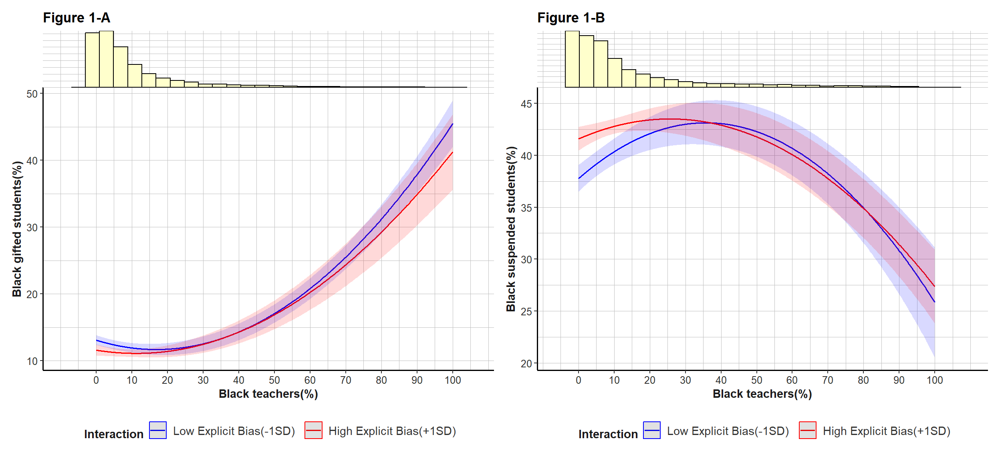
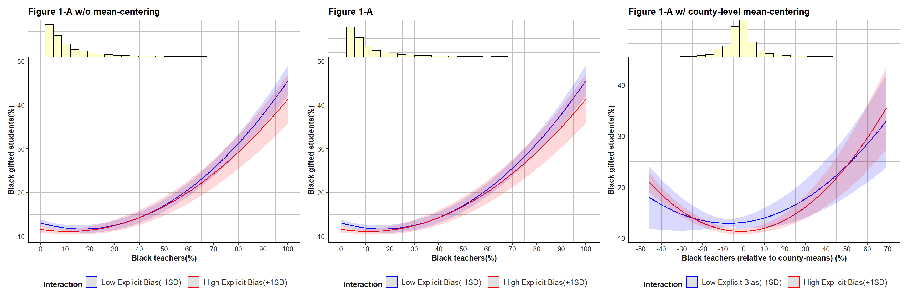
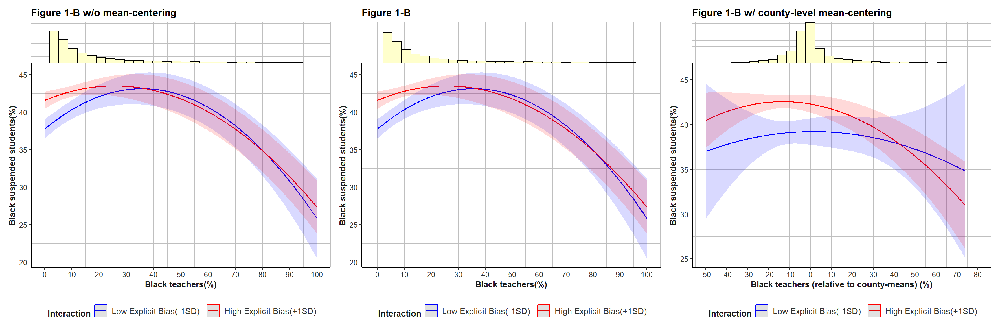

Replication of Park & Favero (2023) - JPART
1. Introduction
This report is the replication of “Park, J., & Favero, N. (2023). Race, Locality, and Representative Bureaucracy: Does Community Bias Matter?. Journal of Public Administration Research and Theory, 33(4), 661-674.”
In the replication data, the pre-processing of the original data was conducted in R, and the main analyses were mostly done in STATA. I’m trying to get the completed pre-processed data by just executing the code originally written by the authors.
But the problem is that some of the original data that were used in the R script was not uploaded (i.e. Race_IAT_0316.rda, Race_IAT_1216.rda).
So, I skipped the data pre-processing procedure and just load the final STATA(.dta) file and started the analysis.
I would try to replicate the tables using the data after the pre-processing and replicate what was done in STATA.
First, I would try to make a table for the descriptive statistics, which is not in the original article.
Second, I replicated ‘Table 1. Percentage of Students in Gifted Program Who Are Black (Explicit Bias)’, ‘Table 2. Percentage of Students in Gifted Program Who Are Black (Implicit Bias)’, ‘Table 3. Percentage of Students Receiving Out-of-School Suspensions Who Are Black (Explicit Bias)’, and ‘Table 4. Percentage of Students Receiving Out-of-School Suspensions Who Are Black (Implicit Bias)’.
Third, I replicated ‘Figure 1. Associations of Black Teachers in High Versus Low Explicit Biased Counties’ using ggplot2.
2. Loading the Packages and Data
# load the packages planned to be used
pacman::p_load("tidyverse","magrittr","bruceR","cowplot","sjPlot", "patchwork",
"glue", "janitor",
"knitr", "kableExtra", "pander", "modelsummary",
"skimr", "psych", "readstata13", "fixest")
# set working dirrectory
setwd("G:/OneDrive - american.edu/(C) American/수업/2024 Fall/Conduct 1/replication/ReplicationParkFavero2023")
getwd() [1] "G:/OneDrive - american.edu/(C) American/수업/2024 Fall/Conduct 1/replication/ReplicationParkFavero2023"options(digits=10)# the pre-processing script is not working properly because some of the rda files are missing
source("./CRDC_IAT_MRP.R") # loading the data
rm(list=ls())
gifted <- read.dta13("./Gifted_Program.dta")
suspension <- read.dta13("./Suspension.dta")3. Gifted Programs - explicit bias: discriptive statistics
# for Model 1.1
# grand mean centering
giftedc <- gifted %>%
mutate(wexpwhite_m = mean(wexp_white),
wexpwhite_c = wexp_white - wexpwhite_m)
model <- lm(gift_black_p ~ wexpwhite_c + tot_black + tot_latino + gift_total +
frp + tot_enr + highschool_ccd + urban + south, data = giftedc)
# dealing with outliers based on studentized residual and cook's distance
giftedfin <- giftedc %>%
cbind(r = MASS::studres(model)) %>%
cbind(cooksd = cooks.distance(model)) %>%
filter(r>=-3 & r<=3 & cooksd <=(4/18643)) %>%
mutate(wexpwhite_mt = mean(wexp_white),
wexpwhite_ct = wexp_white - wexpwhite_mt)
# discriptive statistics
giftedfin %>%
dplyr::select(
gift_black_p, wexp_white, wexpwhite_ct, wiat_white, tot_black,
tot_latino, gift_total, frp, tot_enr, highschool_ccd, urban, south
) %>%
psych::describe() %>%
dplyr::select(!vars & !trimmed & !mad & !range & !se) %>%
janitor::clean_names() %>%
mutate(across(where(is.numeric), ~ round(., 3))) %>%
kable(digits = 3, format.args = list(big.mark = ",")) | n | mean | sd | median | min | max | skew | kurtosis | |
|---|---|---|---|---|---|---|---|---|
| gift_black_p | 17,486 | 12.304 | 13.598 | 8.104 | 0.000 | 82.609 | 1.985 | 4.394 |
| wexp_white | 17,486 | 0.445 | 0.055 | 0.451 | 0.269 | 0.605 | -0.167 | -0.259 |
| wexpwhite_ct | 17,486 | 0.000 | 0.055 | 0.005 | -0.176 | 0.160 | -0.167 | -0.259 |
| wiat_white | 17,486 | 0.409 | 0.025 | 0.412 | 0.309 | 0.466 | -0.805 | 1.094 |
| tot_black | 17,486 | 21.221 | 17.059 | 15.143 | 5.000 | 94.837 | 1.650 | 2.592 |
| tot_latino | 17,486 | 24.748 | 22.459 | 16.539 | 0.000 | 93.711 | 1.112 | 0.271 |
| gift_total | 17,486 | 9.976 | 9.146 | 7.309 | 0.542 | 100.000 | 3.101 | 15.727 |
| frp | 17,486 | 56.953 | 25.165 | 57.532 | 0.000 | 100.000 | -0.101 | -0.894 |
| tot_enr | 17,486 | 758.505 | 472.009 | 646.000 | 35.000 | 4,829.000 | 2.485 | 8.856 |
| highschool_ccd | 17,486 | 0.164 | 0.370 | 0.000 | 0.000 | 1.000 | 1.815 | 1.295 |
| urban | 17,486 | 0.317 | 0.465 | 0.000 | 0.000 | 1.000 | 0.785 | -1.384 |
| south | 17,486 | 0.627 | 0.484 | 1.000 | 0.000 | 1.000 | -0.527 | -1.723 |
# for Model 1.2 & Model 1.3
# grand mean centering
giftedc2 <- gifted %>%
drop_na(tblack) %>%
mutate(tblack_m = mean(tblack),
tblack_c = tblack - tblack_m,
wexpwhite_m = mean(wexp_white),
wexpwhite_c = wexp_white - wexpwhite_m)
model2 <- lm(gift_black_p ~ wexpwhite_c + tblack_c + I(tblack_c^2) +
tot_black + thispanic + tot_latino + gift_total + frp +
tot_enr + highschool_ccd + urban + south, data = giftedc2,
na.action=na.exclude)
# dealing with outliers based on studentized residual and cook's distance
giftedfin2 <- giftedc2 %>%
cbind(r = MASS::studres(model2)) %>%
cbind(cooksd = cooks.distance(model2)) %>%
filter(r>=-3 & r<=3 & cooksd <=(4/7431)) %>%
mutate(tblack_cm = mean(tblack),
tblack_cc = tblack - tblack_cm,
wexpwhite_mt = mean(wexp_white),
wexpwhite_ct = wexp_white - wexpwhite_mt)
# discriptive statistics
giftedfin2 %>%
dplyr::select(
gift_black_p, wexp_white,wexpwhite_ct, wiat_white, tot_black, tot_latino,
gift_total, frp, tot_enr, highschool_ccd, urban, south, tblack, thispanic
) %>%
psych::describe() %>%
dplyr::select(!vars & !trimmed & !mad & !range & !se) %>%
janitor::clean_names() %>%
mutate(across(where(is.numeric), ~ round(., 3))) %>%
kable(digits = 3, format.args = list(big.mark = ",")) | n | mean | sd | median | min | max | skew | kurtosis | |
|---|---|---|---|---|---|---|---|---|
| gift_black_p | 6,956 | 12.128 | 14.207 | 7.937 | 0.000 | 93.939 | 2.472 | 7.465 |
| wexp_white | 6,956 | 0.450 | 0.054 | 0.458 | 0.306 | 0.588 | -0.283 | -0.603 |
| wexpwhite_ct | 6,956 | 0.000 | 0.054 | 0.008 | -0.144 | 0.138 | -0.283 | -0.603 |
| wiat_white | 6,956 | 0.406 | 0.023 | 0.408 | 0.328 | 0.458 | -0.623 | 0.448 |
| tot_black | 6,956 | 19.753 | 16.603 | 13.807 | 5.000 | 94.968 | 2.002 | 4.318 |
| tot_latino | 6,956 | 33.769 | 24.844 | 27.807 | 0.000 | 93.711 | 0.584 | -0.825 |
| gift_total | 6,956 | 9.456 | 7.699 | 7.317 | 0.889 | 100.000 | 2.748 | 13.705 |
| frp | 6,956 | 58.364 | 25.211 | 60.389 | 0.000 | 100.000 | -0.270 | -0.922 |
| tot_enr | 6,956 | 801.776 | 533.570 | 668.000 | 35.000 | 4,829.000 | 2.537 | 8.482 |
| highschool_ccd | 6,956 | 0.161 | 0.367 | 0.000 | 0.000 | 1.000 | 1.849 | 1.417 |
| urban | 6,956 | 0.336 | 0.472 | 0.000 | 0.000 | 1.000 | 0.694 | -1.519 |
| south | 6,956 | 0.649 | 0.477 | 1.000 | 0.000 | 1.000 | -0.625 | -1.609 |
| tblack | 6,956 | 10.860 | 15.560 | 5.400 | 0.000 | 100.000 | 2.594 | 7.643 |
| thispanic | 6,956 | 10.199 | 13.396 | 4.900 | 0.000 | 100.000 | 1.962 | 4.323 |
3. Gifted Programs - explicit bias: Table 1
# first column
model1_1 <- feols(gift_black_p ~ wexpwhite_ct + tot_black + tot_latino + gift_total + frp + tot_enr + highschool_ccd + urban + south, vcov = ~ leaid + fips, data = giftedfin)
# second column
model1_2 <- feols(gift_black_p ~ wexpwhite_ct + tblack_cc + I(tblack_cc^2) + tot_black + + thispanic + tot_latino + gift_total + frp + tot_enr + highschool_ccd + urban + south, vcov = ~ leaid + fips, data = giftedfin2)
# third column
model1_3 <- feols(gift_black_p ~ wexpwhite_ct + tblack_cc + I(tblack_cc^2) + wexpwhite_ct * tblack_cc + wexpwhite_ct * I(tblack_cc^2) + tot_black + + thispanic + tot_latino + gift_total + frp + tot_enr + highschool_ccd + urban + south, vcov = ~ leaid + fips, data = giftedfin2)
# variable name
dict = c(
"wexpwhite_ct" = "Explicit Bias",
"tblack_cc" = "Black teachers (%)",
"I(tblack_cc^2)" = "Black teachers squared",
"wexpwhite_ct:tblack_cc" = "Explicit Bias X Black teachers (%)",
"wexpwhite_ct:I(tblack_cc^2)" = "Explicit Bias X Black teachers squared",
"tot_black" = "Black students (%)",
"thispanic" = "Hispanic teachers (%)",
"tot_latino" = "Hispanic students (%)",
"gift_total" = "Gifted students (%)",
"frp" = "Free or reduced lunch (%)",
"tot_enr" = "Total students",
"highschool_ccd" = "High schools",
"urban" = "Urban schools",
"south" = "South",
"(intercept)" = "Constant"
)
f <- function(x) {format(round(x, 3), big.mark=",")}
gm = list(
list("raw" = "r.squared", "clean" = "R^2", "fmt" = f),
list("raw" = "nobs", "clean" = "N", "fmt" = f))
modelsummary(models = list(`model1.1`= model1_1,
`model1.2`= model1_2,
`model1.3`= model1_3),
fmt = 3,
estimate = "{estimate} ({p.value}) {stars}",
statistic = NULL,
stars = T,
coef_map = dict,
output = "markdown",
gof_map = gm,
notes = "Note: P values are reported in parentheses. Two-way clustered robust standard errors are used. The explicit bias and the percentage of Black teachers variables are mean-centered. +p < .10, *p < .05, **p < .01, ***p < .001",
title = 'Table 1: Percentage of Students in Gifted Program Who Are Black (Explicit Bias)')| model1.1 | model1.2 | model1.3 | |
|---|---|---|---|
| Note: P values are reported in parentheses. Two-way clustered robust standard errors are used. The explicit bias and the percentage of Black teachers variables are mean-centered. +p < .10, *p < .05, **p < .01, ***p < .001 | |||
| Explicit Bias | -12.860 (<0.001) *** | -9.243 (0.001) ** | -7.010 (0.037) * |
| Black teachers (%) | -0.029 (0.195) | -0.031 (0.149) | |
| Black teachers squared | 0.004 (<0.001) *** | 0.004 (<0.001) *** | |
| Explicit Bias X Black teachers (%) | 0.523 (0.148) | ||
| Explicit Bias X Black teachers squared | -0.010 (0.029) * | ||
| Black students (%) | 0.727 (<0.001) *** | 0.704 (<0.001) *** | 0.702 (<0.001) *** |
| Hispanic teachers (%) | -0.004 (0.710) | -0.007 (0.587) | |
| Hispanic students (%) | 0.084 (<0.001) *** | 0.076 (<0.001) *** | 0.078 (<0.001) *** |
| Gifted students (%) | 0.025 (0.021) * | 0.009 (0.355) | 0.009 (0.364) |
| Free or reduced lunch (%) | -0.008 (0.037) * | -0.020 (<0.001) *** | -0.021 (<0.001) *** |
| Total students | -0.001 (<0.001) *** | -0.001 (<0.001) *** | -0.001 (<0.001) *** |
| High schools | 0.074 (0.687) | -0.323 (0.272) | -0.256 (0.340) |
| Urban schools | -0.925 (<0.001) *** | -1.162 (<0.001) *** | -1.143 (<0.001) *** |
| South | 0.073 (0.733) | -0.295 (0.308) | -0.288 (0.304) |
| R^2 | 0.768 | 0.826 | 0.826 |
| N | 17,486 | 6,956 | 6,956 |
4. Gifted Programs - implicit bias: Descriptive Statistics
# for Model 2.1
# grand mean centering
giftedc3 <- gifted %>%
mutate(wiatwhite_m = mean(wiat_white),
wiatwhite_c = wiat_white - wiatwhite_m)
model3 <- lm(gift_black_p ~ wiatwhite_c + tot_black + tot_latino + gift_total +
frp + tot_enr + highschool_ccd + urban + south, data = giftedc3)
# dealing with outliers based on studentized residual and cook's distance
giftedfin3 <- giftedc3 %>%
cbind(r = MASS::studres(model3)) %>%
cbind(cooksd = cooks.distance(model3)) %>%
filter(r>=-3 & r<=3 & cooksd <=(4/18643)) %>%
mutate(wiatwhite_mt = mean(wiat_white),
wiatwhite_ct = wiat_white - wiatwhite_mt)
# discriptive statistics
giftedfin3 %>%
dplyr::select(
gift_black_p, wiat_white, wiatwhite_ct, wiat_white, tot_black,
tot_latino, gift_total, frp, tot_enr, highschool_ccd, urban, south
) %>%
psych::describe() %>%
dplyr::select(!vars & !trimmed & !mad & !range & !se) %>%
janitor::clean_names() %>%
mutate(across(where(is.numeric), ~ round(., 3))) %>%
kable(digits = 3, format.args = list(big.mark = ",")) | n | mean | sd | median | min | max | skew | kurtosis | |
|---|---|---|---|---|---|---|---|---|
| gift_black_p | 17,476 | 12.294 | 13.605 | 8.085 | 0.000 | 82.609 | 1.996 | 4.459 |
| wiat_white | 17,476 | 0.409 | 0.025 | 0.412 | 0.309 | 0.466 | -0.792 | 1.062 |
| wiatwhite_ct | 17,476 | 0.000 | 0.025 | 0.003 | -0.100 | 0.057 | -0.792 | 1.062 |
| tot_black | 17,476 | 21.228 | 17.088 | 15.129 | 5.000 | 94.837 | 1.653 | 2.601 |
| tot_latino | 17,476 | 24.726 | 22.462 | 16.499 | 0.000 | 93.711 | 1.113 | 0.271 |
| gift_total | 17,476 | 9.968 | 9.122 | 7.313 | 0.542 | 100.000 | 3.103 | 15.815 |
| frp | 17,476 | 56.950 | 25.179 | 57.535 | 0.000 | 100.000 | -0.099 | -0.895 |
| tot_enr | 17,476 | 758.787 | 472.606 | 646.000 | 35.000 | 4,829.000 | 2.490 | 8.898 |
| highschool_ccd | 17,476 | 0.164 | 0.370 | 0.000 | 0.000 | 1.000 | 1.814 | 1.291 |
| urban | 17,476 | 0.316 | 0.465 | 0.000 | 0.000 | 1.000 | 0.792 | -1.373 |
| south | 17,476 | 0.629 | 0.483 | 1.000 | 0.000 | 1.000 | -0.534 | -1.715 |
# for Model 2.2 & Model 2.3
# grand mean centering
giftedc4 <- gifted %>%
drop_na(tblack) %>%
mutate(tblack_m = mean(tblack),
tblack_c = tblack - tblack_m,
wiatwhite_m = mean(wiat_white),
wiatwhite_c = wiat_white - wiatwhite_m)
model4 <- lm(gift_black_p ~ wiatwhite_c + tblack_c + I(tblack_c^2) +
tot_black + thispanic + tot_latino + gift_total + frp +
tot_enr + highschool_ccd + urban + south, data = giftedc4,
na.action=na.exclude)
# dealing with outliers based on studentized residual and cook's distance
giftedfin4 <- giftedc4 %>%
cbind(r = MASS::studres(model4)) %>%
cbind(cooksd = cooks.distance(model4)) %>%
filter(r>=-3 & r<=3 & cooksd <=(4/7431)) %>%
mutate(tblack_cm = mean(tblack),
tblack_cc = tblack - tblack_cm,
wiatwhite_mt = mean(wiat_white),
wiatwhite_ct = wiat_white - wiatwhite_mt)
# discriptive statistics
giftedfin4 %>%
dplyr::select(
gift_black_p, wiat_white,wiatwhite_ct, wiat_white, tot_black, tot_latino,
gift_total, frp, tot_enr, highschool_ccd, urban, south, tblack, thispanic
) %>%
psych::describe() %>%
dplyr::select(!vars & !trimmed & !mad & !range & !se) %>%
janitor::clean_names() %>%
mutate(across(where(is.numeric), ~ round(., 3))) %>%
kable(digits = 3, format.args = list(big.mark = ",")) | n | mean | sd | median | min | max | skew | kurtosis | |
|---|---|---|---|---|---|---|---|---|
| gift_black_p | 6,956 | 12.146 | 14.253 | 7.924 | 0.000 | 93.939 | 2.471 | 7.440 |
| wiat_white | 6,956 | 0.406 | 0.023 | 0.408 | 0.328 | 0.458 | -0.626 | 0.457 |
| wiatwhite_ct | 6,956 | 0.000 | 0.023 | 0.002 | -0.078 | 0.052 | -0.626 | 0.457 |
| tot_black | 6,956 | 19.775 | 16.647 | 13.818 | 5.000 | 94.968 | 2.006 | 4.332 |
| tot_latino | 6,956 | 33.776 | 24.845 | 27.845 | 0.000 | 93.711 | 0.582 | -0.827 |
| gift_total | 6,956 | 9.452 | 7.700 | 7.302 | 0.889 | 100.000 | 2.748 | 13.701 |
| frp | 6,956 | 58.388 | 25.212 | 60.436 | 0.000 | 100.000 | -0.271 | -0.922 |
| tot_enr | 6,956 | 801.815 | 533.556 | 668.000 | 35.000 | 4,829.000 | 2.536 | 8.482 |
| highschool_ccd | 6,956 | 0.160 | 0.367 | 0.000 | 0.000 | 1.000 | 1.851 | 1.428 |
| urban | 6,956 | 0.336 | 0.472 | 0.000 | 0.000 | 1.000 | 0.694 | -1.519 |
| south | 6,956 | 0.650 | 0.477 | 1.000 | 0.000 | 1.000 | -0.628 | -1.606 |
| tblack | 6,956 | 10.891 | 15.602 | 5.400 | 0.000 | 100.000 | 2.590 | 7.617 |
| thispanic | 6,956 | 10.200 | 13.383 | 4.900 | 0.000 | 100.000 | 1.957 | 4.295 |
4. Gifted Programs - implicit bias: Table 2
# first column
model2_1 <- feols(gift_black_p ~ wiatwhite_ct + tot_black + tot_latino + gift_total + frp + tot_enr + highschool_ccd + urban + south, vcov = ~ leaid + fips, data = giftedfin3)
# second column
model2_2 <- feols(gift_black_p ~ wiatwhite_ct + tblack_cc + I(tblack_cc^2) + tot_black + + thispanic + tot_latino + gift_total + frp + tot_enr + highschool_ccd + urban + south, vcov = ~ leaid + fips, data = giftedfin4)
# third column
model2_3 <- feols(gift_black_p ~ wiatwhite_ct + tblack_cc + I(tblack_cc^2) + wiatwhite_ct * tblack_cc + wiatwhite_ct * I(tblack_cc^2) + tot_black + + thispanic + tot_latino + gift_total + frp + tot_enr + highschool_ccd + urban + south, vcov = ~ leaid + fips, data = giftedfin4)
# variable name
dict = c(
"wiatwhite_ct" = "Implicit Bias",
"tblack_cc" = "Black teachers (%)",
"I(tblack_cc^2)" = "Black teachers squared",
"wiatwhite_ct:tblack_cc" = "Implicit Bias X Black teachers (%)",
"wiatwhite_ct:I(tblack_cc^2)" = "Implicit Bias X Black teachers squared",
"tot_black" = "Black students (%)",
"thispanic" = "Hispanic teachers (%)",
"tot_latino" = "Hispanic students (%)",
"gift_total" = "Gifted students (%)",
"frp" = "Free or reduced lunch (%)",
"tot_enr" = "Total students",
"highschool_ccd" = "High schools",
"urban" = "Urban schools",
"south" = "South",
"(intercept)" = "Constant"
)
f <- function(x) {format(round(x, 3), big.mark=",")}
gm = list(
list("raw" = "r.squared", "clean" = "R^2", "fmt" = f),
list("raw" = "nobs", "clean" = "N", "fmt" = f))
modelsummary(models = list(`model2.1`= model2_1,
`model2.2`= model2_2,
`model2.3`= model2_3),
fmt = 3,
estimate = "{estimate} ({p.value}) {stars}",
statistic = NULL,
stars = T,
coef_map = dict,
output = "markdown",
gof_map = gm,
notes = "Note: P values are reported in parentheses. Two-way clustered robust standard errors are used. The explicit bias and the percentage of Black teachers variables are mean-centered. + p < .10, * p < .05, ** p < .01, *** p < .001",
title = 'Table 2: Percentage of Students in Gifted Program Who Are Black (Implicit Bias)')| model2.1 | model2.2 | model2.3 | |
|---|---|---|---|
| Note: P values are reported in parentheses. Two-way clustered robust standard errors are used. The explicit bias and the percentage of Black teachers variables are mean-centered. + p < .10, * p < .05, ** p < .01, *** p < .001 | |||
| Implicit Bias | -29.889 (<0.001) *** | -15.562 (0.017) * | -15.113 (0.094) + |
| Black teachers (%) | -0.037 (0.086) + | -0.037 (0.078) + | |
| Black teachers squared | 0.004 (<0.001) *** | 0.004 (<0.001) *** | |
| Implicit Bias X Black teachers (%) | 0.108 (0.906) | ||
| Implicit Bias X Black teachers squared | -0.001 (0.918) | ||
| Black students (%) | 0.722 (<0.001) *** | 0.702 (<0.001) *** | 0.702 (<0.001) *** |
| Hispanic teachers (%) | -0.003 (0.814) | -0.003 (0.811) | |
| Hispanic students (%) | 0.078 (<0.001) *** | 0.074 (<0.001) *** | 0.074 (<0.001) *** |
| Gifted students (%) | 0.023 (0.031) * | 0.014 (0.161) | 0.014 (0.161) |
| Free or reduced lunch (%) | -0.005 (0.189) | -0.018 (0.003) ** | -0.018 (0.003) ** |
| Total students | -0.001 (<0.001) *** | -0.001 (<0.001) *** | -0.001 (<0.001) *** |
| High schools | 0.082 (0.652) | -0.339 (0.256) | -0.333 (0.250) |
| Urban schools | -1.002 (<0.001) *** | -1.125 (<0.001) *** | -1.125 (<0.001) *** |
| South | 0.148 (0.504) | -0.551 (0.032) * | -0.551 (0.031) * |
| R^2 | 0.769 | 0.826 | 0.826 |
| N | 17,476 | 6,956 | 6,956 |
5. Suspension - explicit bias: discriptive statistics
# for Model 3.1
# grand mean centering
suspensionc <- suspension %>%
mutate(wexpwhite_m = mean(wexp_white),
wexpwhite_c = wexp_white - wexpwhite_m)
model5 <- lm(sus_black_p ~ wexpwhite_c + tot_black + tot_latino + sus_total +
frp + tot_enr + highschool_ccd + urban + south, data = suspensionc)
# dealing with outliers based on studentized residual and cook's distance
suspensionfin <- suspensionc %>%
cbind(r = MASS::studres(model5)) %>%
cbind(cooksd = cooks.distance(model5)) %>%
filter(r>=-3 & r<=3 & cooksd <=(4/18895)) %>%
mutate(wexpwhite_mt = mean(wexp_white),
wexpwhite_ct = wexp_white - wexpwhite_mt)
# discriptive statistics
suspensionfin %>%
dplyr::select(
sus_black_p, wexp_white, wexpwhite_ct, wiat_white, tot_black,
tot_latino, sus_total, frp, tot_enr, highschool_ccd, urban, south
) %>%
psych::describe() %>%
dplyr::select(!vars & !trimmed & !mad & !range & !se) %>%
janitor::clean_names() %>%
mutate(across(where(is.numeric), ~ round(., 3))) %>%
kable(digits = 3, format.args = list(big.mark = ",")) | n | mean | sd | median | min | max | skew | kurtosis | |
|---|---|---|---|---|---|---|---|---|
| sus_black_p | 18,037 | 43.716 | 25.193 | 40.000 | 0.000 | 100.000 | 0.473 | -0.756 |
| wexp_white | 18,037 | 0.442 | 0.057 | 0.444 | 0.279 | 0.605 | -0.075 | -0.349 |
| wexpwhite_ct | 18,037 | 0.000 | 0.057 | 0.002 | -0.163 | 0.163 | -0.075 | -0.349 |
| wiat_white | 18,037 | 0.409 | 0.025 | 0.412 | 0.309 | 0.466 | -0.672 | 0.849 |
| tot_black | 18,037 | 29.254 | 23.739 | 20.859 | 5.000 | 95.000 | 1.170 | 0.399 |
| tot_latino | 18,037 | 23.855 | 22.465 | 15.342 | 0.000 | 93.444 | 1.114 | 0.256 |
| sus_total | 18,037 | 7.682 | 7.102 | 5.444 | 0.363 | 97.561 | 2.879 | 14.502 |
| frp | 18,037 | 65.641 | 23.985 | 67.628 | 0.000 | 100.000 | -0.387 | -0.681 |
| tot_enr | 18,037 | 783.820 | 512.737 | 650.000 | 21.000 | 4,829.000 | 2.194 | 6.755 |
| highschool_ccd | 18,037 | 0.242 | 0.428 | 0.000 | 0.000 | 1.000 | 1.205 | -0.548 |
| urban | 18,037 | 0.368 | 0.482 | 0.000 | 0.000 | 1.000 | 0.547 | -1.701 |
| south | 18,037 | 0.554 | 0.497 | 1.000 | 0.000 | 1.000 | -0.216 | -1.954 |
# for Model 3.2 & Model 3.3
# grand mean centering
suspensionc2 <- suspension %>%
drop_na(tblack) %>%
mutate(tblack_m = mean(tblack),
tblack_c = tblack - tblack_m,
wexpwhite_m = mean(wexp_white),
wexpwhite_c = wexp_white - wexpwhite_m)
model6 <- lm(sus_black_p ~ wexpwhite_c + tblack_c + I(tblack_c^2) +
tot_black + thispanic + tot_latino + sus_total + frp +
tot_enr + highschool_ccd + urban + south, data = suspensionc2,
na.action=na.exclude)
# dealing with outliers based on studentized residual and cook's distance
suspensionfin2 <- suspensionc2 %>%
cbind(r = MASS::studres(model6)) %>%
cbind(cooksd = cooks.distance(model6)) %>%
filter(r>=-3 & r<=3 & cooksd <=(4/6677)) %>%
mutate(tblack_cm = mean(tblack),
tblack_cc = tblack - tblack_cm,
wexpwhite_mt = mean(wexp_white),
wexpwhite_ct = wexp_white - wexpwhite_mt)
# discriptive statistics
suspensionfin2 %>%
dplyr::select(
sus_black_p, wexp_white,wexpwhite_ct, wiat_white, tot_black, tot_latino,
sus_total, frp, tot_enr, highschool_ccd, urban, south, tblack, thispanic
) %>%
psych::describe() %>%
dplyr::select(!vars & !trimmed & !mad & !range & !se) %>%
janitor::clean_names() %>%
mutate(across(where(is.numeric), ~ round(., 3))) %>%
kable(digits = 3, format.args = list(big.mark = ",")) | n | mean | sd | median | min | max | skew | kurtosis | |
|---|---|---|---|---|---|---|---|---|
| sus_black_p | 6,346 | 41.136 | 24.299 | 36.603 | 0.000 | 100.000 | 0.581 | -0.542 |
| wexp_white | 6,346 | 0.445 | 0.056 | 0.451 | 0.306 | 0.588 | -0.148 | -0.615 |
| wexpwhite_ct | 6,346 | 0.000 | 0.056 | 0.007 | -0.139 | 0.143 | -0.148 | -0.615 |
| wiat_white | 6,346 | 0.405 | 0.024 | 0.408 | 0.328 | 0.458 | -0.513 | 0.347 |
| tot_black | 6,346 | 26.162 | 22.132 | 17.913 | 5.000 | 94.979 | 1.414 | 1.217 |
| tot_latino | 6,346 | 33.029 | 25.225 | 27.805 | 0.000 | 93.444 | 0.540 | -0.901 |
| sus_total | 6,346 | 7.186 | 7.109 | 4.956 | 0.363 | 97.561 | 3.496 | 21.807 |
| frp | 6,346 | 65.753 | 23.369 | 69.208 | 1.887 | 100.000 | -0.507 | -0.654 |
| tot_enr | 6,346 | 845.095 | 571.598 | 695.000 | 21.000 | 4,829.000 | 2.195 | 6.361 |
| highschool_ccd | 6,346 | 0.239 | 0.426 | 0.000 | 0.000 | 1.000 | 1.226 | -0.496 |
| urban | 6,346 | 0.367 | 0.482 | 0.000 | 0.000 | 1.000 | 0.552 | -1.695 |
| south | 6,346 | 0.609 | 0.488 | 1.000 | 0.000 | 1.000 | -0.445 | -1.802 |
| tblack | 6,346 | 14.182 | 19.413 | 6.600 | 0.000 | 100.000 | 2.075 | 4.030 |
| thispanic | 6,346 | 9.380 | 12.259 | 4.500 | 0.000 | 83.639 | 1.928 | 4.112 |
5. Suspension - explicit bias: Table 3
# first column
model3_1 <- feols(sus_black_p ~ wexpwhite_ct + tot_black + tot_latino + sus_total + frp + tot_enr + highschool_ccd + urban + south, vcov = ~ leaid + fips, data = suspensionfin)
# second column
model3_2 <- feols(sus_black_p ~ wexpwhite_ct + tblack_cc + I(tblack_cc^2) + tot_black + thispanic + tot_latino + sus_total + frp + tot_enr + highschool_ccd + urban + south, vcov = ~ leaid + fips, data = suspensionfin2)
# third column
model3_3 <- feols(sus_black_p ~ wexpwhite_ct + tblack_cc + I(tblack_cc^2) + wexpwhite_ct * tblack_cc + wexpwhite_ct * I(tblack_cc^2) + tot_black + thispanic + tot_latino + sus_total + frp + tot_enr + highschool_ccd + urban + south, vcov = ~ leaid + fips, data = suspensionfin2)
# variable name
dict = c(
"wexpwhite_ct" = "Explicit Bias",
"tblack_cc" = "Black teachers (%)",
"I(tblack_cc^2)" = "Black teachers squared",
"wexpwhite_ct:tblack_cc" = "Explicit Bias X Black teachers (%)",
"wexpwhite_ct:I(tblack_cc^2)" = "Explicit Bias X Black teachers squared",
"tot_black" = "Black students (%)",
"thispanic" = "Hispanic teachers (%)",
"tot_latino" = "Hispanic students (%)",
"gift_total" = "Suspended students (%)",
"frp" = "Free or reduced lunch (%)",
"tot_enr" = "Total students",
"highschool_ccd" = "High schools",
"urban" = "Urban schools",
"south" = "South",
"(intercept)" = "Constant"
)
f <- function(x) {format(round(x, 3), big.mark=",")}
gm = list(
list("raw" = "r.squared", "clean" = "R^2", "fmt" = f),
list("raw" = "nobs", "clean" = "N", "fmt" = f))
modelsummary(models = list(`model3.1`= model3_1,
`model3.2`= model3_2,
`model3.3`= model3_3),
fmt = 3,
estimate = "{estimate} ({p.value}) {stars}",
statistic = NULL,
stars = T,
coef_map = dict,
output = "markdown",
gof_map = gm,
notes = "Note: P values are reported in parentheses. Two-way clustered robust standard errors are used. The explicit bias and the percentage of Black teachers variables are mean-centered. +p < .10, *p < .05, **p < .01, ***p < .001",
title = 'Table 3: Percentage of Students Receiving Out-of-School Suspensions Who Are Black (Explicit Bias)')| model3.1 | model3.2 | model3.3 | |
|---|---|---|---|
| Note: P values are reported in parentheses. Two-way clustered robust standard errors are used. The explicit bias and the percentage of Black teachers variables are mean-centered. +p < .10, *p < .05, **p < .01, ***p < .001 | |||
| Explicit Bias | 35.560 (<0.001) *** | 21.389 (<0.001) *** | 17.461 (0.003) ** |
| Black teachers (%) | 0.111 (<0.001) *** | 0.124 (<0.001) *** | |
| Black teachers squared | -0.003 (<0.001) *** | -0.004 (<0.001) *** | |
| Explicit Bias X Black teachers (%) | -1.023 (0.017) * | ||
| Explicit Bias X Black teachers squared | 0.011 (0.108) | ||
| Black students (%) | 0.975 (<0.001) *** | 0.992 (<0.001) *** | 0.989 (<0.001) *** |
| Hispanic teachers (%) | 0.109 (0.002) ** | 0.108 (0.003) ** | |
| Hispanic students (%) | 0.014 (0.139) | -0.047 (0.003) ** | -0.049 (0.002) ** |
| Free or reduced lunch (%) | -0.013 (0.074) + | 0.040 (0.001) ** | 0.042 (<0.001) *** |
| Total students | 0.001 (<0.001) *** | 0.001 (0.032) * | 0.001 (0.020) * |
| High schools | -2.259 (<0.001) *** | -1.953 (<0.001) *** | -2.072 (<0.001) *** |
| Urban schools | 1.360 (<0.001) *** | 0.826 (0.066) + | 0.819 (0.073) + |
| South | -0.667 (0.062) + | -1.536 (0.020) * | -1.625 (0.015) * |
| R^2 | 0.828 | 0.813 | 0.813 |
| N | 18,037 | 6,346 | 6,346 |
6. Suspension - implicit bias: Descriptive Statistics
# for Model 4.1
# grand mean centering
suspensionc3 <- suspension %>%
mutate(wiatwhite_m = mean(wiat_white),
wiatwhite_c = wiat_white - wiatwhite_m)
model7 <- lm(sus_black_p ~ wiatwhite_c + tot_black + tot_latino + sus_total +
frp + tot_enr + highschool_ccd + urban + south, data = suspensionc3)
# dealing with outliers based on studentized residual and cook's distance
suspensionfin3 <- suspensionc3 %>%
cbind(r = MASS::studres(model7)) %>%
cbind(cooksd = cooks.distance(model7)) %>%
filter(r>=-3 & r<=3 & cooksd <=(4/18895)) %>%
mutate(wiatwhite_mt = mean(wiat_white),
wiatwhite_ct = wiat_white - wiatwhite_mt)
# discriptive statistics
suspensionfin3 %>%
dplyr::select(
sus_black_p, wiat_white, wiatwhite_ct, wiat_white, tot_black,
tot_latino, sus_total, frp, tot_enr, highschool_ccd, urban, south
) %>%
psych::describe() %>%
dplyr::select(!vars & !trimmed & !mad & !range & !se) %>%
janitor::clean_names() %>%
mutate(across(where(is.numeric), ~ round(., 3))) %>%
kable(digits = 3, format.args = list(big.mark = ",")) | n | mean | sd | median | min | max | skew | kurtosis | |
|---|---|---|---|---|---|---|---|---|
| sus_black_p | 18,013 | 43.651 | 25.214 | 39.713 | 0.000 | 100.000 | 0.475 | -0.754 |
| wiat_white | 18,013 | 0.409 | 0.025 | 0.412 | 0.309 | 0.466 | -0.653 | 0.811 |
| wiatwhite_ct | 18,013 | 0.000 | 0.025 | 0.002 | -0.100 | 0.056 | -0.653 | 0.811 |
| tot_black | 18,013 | 29.246 | 23.732 | 20.859 | 5.000 | 95.000 | 1.169 | 0.396 |
| tot_latino | 18,013 | 23.818 | 22.462 | 15.260 | 0.000 | 93.444 | 1.115 | 0.258 |
| sus_total | 18,013 | 7.693 | 7.129 | 5.447 | 0.363 | 97.561 | 2.898 | 14.683 |
| frp | 18,013 | 65.634 | 23.986 | 67.609 | 0.000 | 100.000 | -0.387 | -0.681 |
| tot_enr | 18,013 | 783.537 | 512.040 | 650.000 | 21.000 | 4,829.000 | 2.185 | 6.701 |
| highschool_ccd | 18,013 | 0.242 | 0.428 | 0.000 | 0.000 | 1.000 | 1.204 | -0.550 |
| urban | 18,013 | 0.367 | 0.482 | 0.000 | 0.000 | 1.000 | 0.550 | -1.698 |
| south | 18,013 | 0.555 | 0.497 | 1.000 | 0.000 | 1.000 | -0.222 | -1.951 |
# for Model 4.2 & Model 4.3
# grand mean centering
suspensionc4 <- suspension %>%
drop_na(tblack) %>%
mutate(tblack_m = mean(tblack),
tblack_c = tblack - tblack_m,
wiatwhite_m = mean(wiat_white),
wiatwhite_c = wiat_white - wiatwhite_m)
model8 <- lm(sus_black_p ~ wiatwhite_c + tblack_c + I(tblack_c^2) +
tot_black + thispanic + tot_latino + sus_total + frp +
tot_enr + highschool_ccd + urban + south, data = suspensionc4,
na.action=na.exclude)
# dealing with outliers based on studentized residual and cook's distance
suspensionfin4 <- suspensionc4 %>%
cbind(r = MASS::studres(model8)) %>%
cbind(cooksd = cooks.distance(model8)) %>%
filter(r>=-3 & r<=3 & cooksd <=(4/6677)) %>%
mutate(tblack_cm = mean(tblack),
tblack_cc = tblack - tblack_cm,
wiatwhite_mt = mean(wiat_white),
wiatwhite_ct = wiat_white - wiatwhite_mt)
# discriptive statistics
suspensionfin4 %>%
dplyr::select(
sus_black_p, wiat_white, wiatwhite_ct, wiat_white, tot_black, tot_latino,
sus_total, frp, tot_enr, highschool_ccd, urban, south, tblack, thispanic
) %>%
psych::describe() %>%
dplyr::select(!vars & !trimmed & !mad & !range & !se) %>%
janitor::clean_names() %>%
mutate(across(where(is.numeric), ~ round(., 3))) %>%
kable(digits = 3, format.args = list(big.mark = ",")) | n | mean | sd | median | min | max | skew | kurtosis | |
|---|---|---|---|---|---|---|---|---|
| sus_black_p | 6,342 | 41.112 | 24.287 | 36.585 | 0.000 | 100.000 | 0.585 | -0.535 |
| wiat_white | 6,342 | 0.405 | 0.023 | 0.408 | 0.328 | 0.458 | -0.499 | 0.326 |
| wiatwhite_ct | 6,342 | 0.000 | 0.023 | 0.002 | -0.078 | 0.052 | -0.499 | 0.326 |
| tot_black | 6,342 | 26.138 | 22.125 | 17.869 | 5.000 | 94.979 | 1.416 | 1.223 |
| tot_latino | 6,342 | 33.066 | 25.269 | 27.891 | 0.000 | 93.444 | 0.538 | -0.905 |
| sus_total | 6,342 | 7.167 | 7.018 | 4.956 | 0.363 | 97.561 | 3.341 | 19.555 |
| frp | 6,342 | 65.768 | 23.363 | 69.222 | 1.887 | 100.000 | -0.508 | -0.649 |
| tot_enr | 6,342 | 845.271 | 571.855 | 695.000 | 21.000 | 4,829.000 | 2.196 | 6.357 |
| highschool_ccd | 6,342 | 0.239 | 0.426 | 0.000 | 0.000 | 1.000 | 1.224 | -0.501 |
| urban | 6,342 | 0.366 | 0.482 | 0.000 | 0.000 | 1.000 | 0.556 | -1.692 |
| south | 6,342 | 0.610 | 0.488 | 1.000 | 0.000 | 1.000 | -0.452 | -1.796 |
| tblack | 6,342 | 14.175 | 19.391 | 6.600 | 0.000 | 100.000 | 2.072 | 4.018 |
| thispanic | 6,342 | 9.394 | 12.296 | 4.500 | 0.000 | 83.639 | 1.934 | 4.150 |
6. Suspension - implicit bias: Table 4
# first column
model4_1 <- feols(sus_black_p ~ wiatwhite_ct + tot_black + tot_latino + sus_total + frp + tot_enr + highschool_ccd + urban + south, vcov = ~ leaid + fips, data = suspensionfin3)
# second column
model4_2 <- feols(sus_black_p ~ wiatwhite_ct + tblack_cc + I(tblack_cc^2) + tot_black + + thispanic + tot_latino + sus_total + frp + tot_enr + highschool_ccd + urban + south, vcov = ~ leaid + fips, data = suspensionfin4)
# third column
model4_3 <- feols(sus_black_p ~ wiatwhite_ct + tblack_cc + I(tblack_cc^2) + wiatwhite_ct * tblack_cc + wiatwhite_ct * I(tblack_cc^2) + tot_black + + thispanic + tot_latino + sus_total + frp + tot_enr + highschool_ccd + urban + south, vcov = ~ leaid + fips, data = suspensionfin4)
# variable name
dict = c(
"wiatwhite_ct" = "Implicit Bias",
"tblack_cc" = "Black teachers (%)",
"I(tblack_cc^2)" = "Black teachers squared",
"wiatwhite_ct:tblack_cc" = "Implicit Bias X Black teachers (%)",
"wiatwhite_ct:I(tblack_cc^2)" = "Implicit Bias X Black teachers squared",
"tot_black" = "Black students (%)",
"thispanic" = "Hispanic teachers (%)",
"tot_latino" = "Hispanic students (%)",
"sus_total" = "Gifted students (%)",
"frp" = "Free or reduced lunch (%)",
"tot_enr" = "Total students",
"highschool_ccd" = "High schools",
"urban" = "Urban schools",
"south" = "South",
"(intercept)" = "Constant"
)
f <- function(x) {format(round(x, 3), big.mark=",")}
gm = list(
list("raw" = "r.squared", "clean" = "R^2", "fmt" = f),
list("raw" = "nobs", "clean" = "N", "fmt" = f))
modelsummary(models = list(`model4.1`= model4_1,
`model4.2`= model4_2,
`model4.3`= model4_3),
fmt = 3,
estimate = "{estimate} ({p.value}) {stars}",
statistic = NULL,
stars = T,
coef_map = dict,
output = "markdown",
gof_map = gm,
notes = "Note: P values are reported in parentheses. Two-way clustered robust standard errors are used. The explicit bias and the percentage of Black teachers variables are mean-centered. + p < .10, * p < .05, ** p < .01, *** p < .001",
title = 'Table 4. Percentage of Students Receiving Out-of-School Suspensions Who Are Black (Implicit Bias)')| model4.1 | model4.2 | model4.3 | |
|---|---|---|---|
| Note: P values are reported in parentheses. Two-way clustered robust standard errors are used. The explicit bias and the percentage of Black teachers variables are mean-centered. + p < .10, * p < .05, ** p < .01, *** p < .001 | |||
| Implicit Bias | 49.890 (<0.001) *** | 4.683 (0.714) | -2.471 (0.848) |
| Black teachers (%) | 0.133 (<0.001) *** | 0.140 (<0.001) *** | |
| Black teachers squared | -0.004 (<0.001) *** | -0.004 (<0.001) *** | |
| Implicit Bias X Black teachers (%) | -2.168 (0.048) * | ||
| Implicit Bias X Black teachers squared | 0.018 (0.349) | ||
| Black students (%) | 0.990 (<0.001) *** | 0.997 (<0.001) *** | 0.998 (<0.001) *** |
| Hispanic teachers (%) | 0.108 (0.004) ** | 0.110 (0.003) ** | |
| Hispanic students (%) | 0.017 (0.082) + | -0.045 (0.005) ** | -0.048 (0.003) ** |
| Gifted students (%) | -0.216 (<0.001) *** | -0.258 (<0.001) *** | -0.257 (<0.001) *** |
| Free or reduced lunch (%) | -0.014 (0.054) + | 0.042 (<0.001) *** | 0.044 (<0.001) *** |
| Total students | 0.001 (<0.001) *** | 0.001 (0.009) ** | 0.001 (0.004) ** |
| High schools | -2.392 (<0.001) *** | -2.069 (<0.001) *** | -2.176 (<0.001) *** |
| Urban schools | 1.112 (<0.001) *** | 0.458 (0.305) | 0.499 (0.272) |
| South | 0.204 (0.583) | -0.447 (0.434) | -0.587 (0.295) |
| R^2 | 0.827 | 0.812 | 0.812 |
| N | 18,013 | 6,342 | 6,342 |
7. Figure 1
Code
# figure 1-A
int_upper <- mean(giftedfin2$wexpwhite_ct)+sd(giftedfin2$wexpwhite_ct)
int_lower <- mean(giftedfin2$wexpwhite_ct)-sd(giftedfin2$wexpwhite_ct)
p1 <- plot_model(model1_3, type = "pred", ci.lvl = .95,
terms = c("tblack_cc [all]", glue("wexpwhite_ct[{int_lower},{int_upper}]"))) +
ds4psy::theme_ds4psy() +
scale_x_continuous(lim = c(-11,90),
breaks = c(-10.86005, -0.86005, 9.13995, 19.13995, 29.13995, 39.13995, 49.13995, 59.13995, 69.13995, 79.13995, 89.13995),
labels = c("0", "10", "20", "30", "40", "50", "60", "70", "80", "90", "100")) +
ylab("Black gifted students(%)") +
xlab("Black teachers(%)") +
labs(color = "Interaction") +
ggtitle("Figure 1-A") +
scale_fill_manual(
values = c( "-0.0538681982230059" = "blue",
"0.0538681982230059" = "red"),
labels = c( "-0.0538681982230059" = "Low Explicit Bias(-1SD)",
"0.0538681982230059" = "High Explicit Bias(+1SD)"))+
scale_color_manual(
values = c( "-0.0538681982230059" = "blue",
"0.0538681982230059" = "red"),
labels = c( "-0.0538681982230059" = "Low Explicit Bias(-1SD)",
"0.0538681982230059" = "High Explicit Bias(+1SD)"))+
theme(legend.position = "bottom", legend.direction = "horizontal")
xhist1 <- axis_canvas(p1, axis = "x") +
geom_histogram(data = giftedfin2, aes(x = tblack_cc),
color = "black",fill = "#FFFFCC") +
scale_x_continuous(lim = c(-11,90),
breaks = c(-10.86005, -0.86005, 9.13995, 19.13995, 29.13995, 39.13995, 49.13995, 59.13995, 69.13995, 79.13995, 89.13995),
labels = c("0", "10", "20", "30", "40", "50", "60", "70", "80", "90", "100")) +
labs(color = NULL, fill = NULL) +
ds4psy::theme_ds4psy()
combined_plot1 <- insert_xaxis_grob(p1, xhist1, position = "top")Code
# figure 1-B
int_upper2 <- mean(suspensionfin2$wexpwhite_ct)+sd(suspensionfin2$wexpwhite_ct)
int_lower2 <- mean(suspensionfin2$wexpwhite_ct)-sd(suspensionfin2$wexpwhite_ct)
p2 <- plot_model(model3_3, type = "pred", ci.lvl = .95,
terms = c("tblack_cc [all]", glue("wexpwhite_ct[{int_lower2},{int_upper2}]"))) +
scale_x_continuous(lim = c(-15,86),
breaks = c(-14.18238, -4.18238, 5.81762, 15.81762,
25.81762, 35.81762, 45.81762,
55.81762, 65.81762, 75.81762,
85.81762),
labels = c("0", "10", "20", "30", "40",
"50", "60", "70", "80", "90", "100")) +
ylab("Black suspended students(%)") +
xlab("Black teachers(%)") +
labs(color = "Interaction") +
ggtitle("Figure 1-B") +
scale_fill_manual(
values = c( "-0.0557089200370501" = "blue",
"0.0557089200370501" = "red"),
labels = c( "-0.0557089200370501" = "Low Explicit Bias(-1SD)",
"0.0557089200370501" = "High Explicit Bias(+1SD)"))+
scale_color_manual(
values = c( "-0.0557089200370501" = "blue",
"0.0557089200370501" = "red"),
labels = c( "-0.0557089200370501" = "Low Explicit Bias(-1SD)",
"0.0557089200370501" = "High Explicit Bias(+1SD)"))+
ds4psy::theme_ds4psy() +
theme(legend.position = "bottom", legend.direction = "horizontal")
xhist2 <- axis_canvas(p2, axis = "x") +
geom_histogram(data = suspensionfin2, aes(x = tblack_cc),
color = "black",fill = "#FFFFCC") +
scale_x_continuous(lim = c(-15,86),
breaks = c(-14.18238, -4.18238, 5.81762, 15.81762,
25.81762, 35.81762, 45.81762,
55.81762, 65.81762, 75.81762,
85.81762),
labels = c("0", "10", "20", "30", "40",
"50", "60", "70", "80", "90", "100")) +
labs(color = NULL, fill = NULL) +
ds4psy::theme_ds4psy()
combined_plot2 <- insert_xaxis_grob(p2, xhist2, position = "top")Code
# completed figure
pfin1 <- ggdraw(combined_plot1)
pfin2 <- ggdraw(combined_plot2)
pfin1 + pfin2
8. Alternative Analysis
The way the analyst scale independent variables in multilevel models can significantly impact the variance of the intercept. This is a major issue because different scaling choices may lead to substantially different results and conclusions, potentially altering key findings of the analysis.
Despite the fact that this article didn’t exactly adopt multilevel modelling in the main analyses, due to the inconsistency in the levels of variables, how the analyst handles the scaling of each variable can significantly impact the interpretation of variables and the results.
The unit of analysis is “US Public School”.
Dependent variables are defined at individual school level. According to the article, “the dependent variable indicates what percentage of students experiencing this outcome are black (p.666).”
Some independent Variables are defined at individual school level. “The other main independent variable is the proportion of black teachers in public schools (p.666).”
Other independent(or moderating) variables are defined at county level. According to the article, “both county-level explicit and implicit bias can be estimated by aggregating more than 1.2 million individual responses at the county level (p. 666).”
The specification of the model is: \[ y_{kcdi} = \beta_0 + \beta_1 \cdot \text{Biases}_{\text{explicit, implicit}} + \beta_2 \cdot \text{Prop of Black Teachers} + \] \[ \beta_3 \cdot (\text{Prop of Black Teachers})^2 + \beta_4 \cdot \text{Biases}_{\text{explicit, implicit}} \cdot \text{Prop of Black Teachers} \] \[ + \beta_5 \cdot \text{Biases}_{\text{explicit, implicit}} \cdot (\text{Prop of Black Teachers})^2 + \boldsymbol{\beta} \cdot \text{Controls} + \gamma_c + \lambda_d + \varepsilon_i \]
The subscripts are k is for different dependent variables. c denotes county, d denotes district, and i denotes each schools. \(\gamma_c\) is county-level fixed effect and \(\lambda_d\) is district-level fixed effect. \(\epsilon\) denotes school level error term
The interaction term is very similar to the case of cross-level interaction between each level. That is, the model captures how the county-level variables interact with school-level variables.
According to Enders & Tofighi (2007), grand mean-centering can be used when the primary interest is in a Level 2 predictor and you want to control for Level 1 covariates. Grand mean-centering allows Level 1 variables to act as covariates and is appropriate for examining the influence of a Level 2 predictor while controlling for Level 1 variables. However, grand mean-centering can potentially produce spurious cross-level interaction effects if not properly specified, as it may confound within- and between-cluster effects in cross-level interactions.
Whereas group mean-centering provides an unbiased estimate of the pooled within-cluster regression coefficient and is preferable for examining cross-level interactions. It yields a relatively “pure” estimate of the cross-level interaction that is not confounded with potential Level 2 interactions.
The authors of the Park & Favero (2023) adopted the grand mean-centering on proportion of black teachers and the county-level racial bias measures “to simplify interpretation of squared terms and interaction terms (p.667).”
- The authors do not explicitly state which variables are assumed to be moderating variables; however, based on Figure 1, it appears that the explicit and implicit bias variables at level 2 are treated as moderators, while the proportion of Black teachers at level 1 is considered an independent variable. Therefore, from this perspective, the model seems to examine how level 2 variables moderate the relationships among level 1 variables. However, if the level 1 variables are grand mean-centered, it will estimate the weighted results of interactions between counties and between individual schools, which may confound interpretation.
Therefore, in this report, while it is true that grand mean-centering is the effective option for intuitive interpretation and helps mitigate multicollinearity, the analysis aims to examine how the estimates change under an alternative specification of the independent variable ‘the proportion of Black teachers.’ First, an alternative specification without mean-centering was estimated to compare the influence of mean-centering. Second, given that the moderating variables are defined at the county level and county-level fixed effects are considered in the model, county-level mean-centering was performed. This approach helps control for differences in the independent variable arising from inter-county variations and allows for observation of how the interacting relationships change.
8-1. Percentage of Students in Gifted Program
Code
# Percentage of Students in Gifted Program Who Are Black
# Grand Mean Centering vs. Group Mean Centering
# 379 County and 1003 Districts
print(glue("# of County: {giftedc2$fips %>% unique() %>% length()},
# of Districts: {giftedc2$leaid %>% unique() %>% length()}"))# of County: 379,
# of Districts: 1003Code
# Create new variable of 'Black teachers (%) (tblack_cm2)' by county-level mean centering
giftedfinadd <- giftedc2 %>%
cbind(r = MASS::studres(model2)) %>%
cbind(cooksd = cooks.distance(model2)) %>%
filter(r>=-3 & r<=3 & cooksd <=(4/7431)) %>%
mutate(tblack_cm = mean(tblack),
tblack_cc = tblack - tblack_cm,
wexpwhite_mt = mean(wexp_white),
wexpwhite_ct = wexp_white - wexpwhite_mt) %>%
group_by(fips) %>%
mutate(tblack_cm2 = mean(tblack),
tblack_cc2 = tblack - tblack_cm2) %>%
ungroup()
# Model 1.3 (w/o Mean Centering)
modeladd1 <- feols(gift_black_p ~ wexpwhite_ct + tblack + I(tblack^2) + wexpwhite_ct * tblack + wexpwhite_ct * I(tblack^2) + tot_black + + thispanic + tot_latino + gift_total + frp + tot_enr + highschool_ccd + urban + south, vcov = ~ leaid + fips, data = giftedfinadd)
# Model 1.3 (w/ Grand Mean Centering)
modeladd2 <- feols(gift_black_p ~ wexpwhite_ct + tblack_cc + I(tblack_cc^2) + wexpwhite_ct * tblack_cc + wexpwhite_ct * I(tblack_cc^2) + tot_black + + thispanic + tot_latino + gift_total + frp + tot_enr + highschool_ccd + urban + south, vcov = ~ leaid + fips, data = giftedfinadd)
# Model 1.3 (w/ County-level Mean centering)
modeladd3 <- feols(gift_black_p ~ wexpwhite_ct + tblack_cc2 + I(tblack_cc2^2) + wexpwhite_ct * tblack_cc2 + wexpwhite_ct * I(tblack_cc2^2) + tot_black + + thispanic + tot_latino + gift_total + frp + tot_enr + highschool_ccd + urban + south, vcov = ~ leaid + fips, data = giftedfinadd)
# variable name
dict = c(
"wexpwhite_ct" = "Explicit Bias",
"tblack" = "Black teachers (%)",
"I(tblack^2)" = "Black teachers squared",
"wexpwhite_ct:tblack" = "Explicit Bias X Black teachers (%)",
"wexpwhite_ct:I(tblack^2)" = "Explicit Bias X Black teachers squared",
"tblack_cc" = "Black teachers (%) (grand)",
"I(tblack_cc^2)" = "Black teachers (grand) squared",
"wexpwhite_ct:tblack_cc" = "Explicit Bias X Black teachers (%) (grand)",
"wexpwhite_ct:I(tblack_cc^2)" = "Explicit Bias X Black teachers (grand) squared",
"tblack_cc2" = "Black teachers (%) (county)",
"I(tblack_cc2^2)" = "Black teachers (county) squared",
"wexpwhite_ct:tblack_cc2" = "Explicit Bias X Black teachers (%) (county)",
"wexpwhite_ct:I(tblack_cc2^2)" = "Explicit Bias X Black teachers (county) squared",
"tot_black" = "Black students (%)",
"thispanic" = "Hispanic teachers (%)",
"tot_latino" = "Hispanic students (%)",
"gift_total" = "Gifted students (%)",
"frp" = "Free or reduced lunch (%)",
"tot_enr" = "Total students",
"highschool_ccd" = "High schools",
"urban" = "Urban schools",
"south" = "South",
"(intercept)" = "Constant"
)
f <- function(x) {format(round(x, 3), big.mark=",")}
gm = list(
list("raw" = "r.squared", "clean" = "R^2", "fmt" = f),
list("raw" = "nobs", "clean" = "N", "fmt" = f))
modelsummary(models = list(
`model1.3 (w/o mean-centering)`= modeladd1,
`model1.3 (w/ grand mean-centering)`= modeladd2,
`model1.3 (w/ county-level mean-centering)`= modeladd3),
fmt = 3,
estimate = "{estimate} ({p.value}) {stars}",
statistic = NULL,
stars = T,
coef_map = dict,
output = "markdown",
gof_map = gm,
notes = "Note: P values are reported in parentheses. Two-way clustered robust standard errors are used. The explicit bias is grand mean-centered. Each row used distinct specification on the percentage of Black teachers variables. First column estimated without any mean-centering. Second column estimated with grand mean-centered as in original paper. Third column estimated with county-level mean-centering. + p < .10, * p < .05, ** p < .01, *** p < .001")| model1.3 (w/o mean-centering) | model1.3 (w/ grand mean-centering) | model1.3 (w/ county-level mean-centering) | |
|---|---|---|---|
| Note: P values are reported in parentheses. Two-way clustered robust standard errors are used. The explicit bias is grand mean-centered. Each row used distinct specification on the percentage of Black teachers variables. First column estimated without any mean-centering. Second column estimated with grand mean-centered as in original paper. Third column estimated with county-level mean-centering. + p < .10, * p < .05, ** p < .01, *** p < .001 | |||
| Explicit Bias | -13.858 (<0.001) *** | -7.010 (0.037) * | -16.538 (<0.001) *** |
| Black teachers (%) | -0.126 (<0.001) *** | ||
| Black teachers squared | 0.004 (<0.001) *** | ||
| Explicit Bias X Black teachers (%) | 0.738 (0.092) + | ||
| Explicit Bias X Black teachers squared | -0.010 (0.029) * | ||
| Black teachers (%) (grand) | -0.031 (0.149) | ||
| Black teachers (grand) squared | 0.004 (<0.001) *** | ||
| Explicit Bias X Black teachers (%) (grand) | 0.523 (0.148) | ||
| Explicit Bias X Black teachers (grand) squared | -0.010 (0.029) * | ||
| Black teachers (%) (county) | 0.032 (0.261) | ||
| Black teachers (county) squared | 0.004 (<0.001) *** | ||
| Explicit Bias X Black teachers (%) (county) | -0.343 (0.570) | ||
| Explicit Bias X Black teachers (county) squared | 0.013 (0.065) + | ||
| Black students (%) | 0.702 (<0.001) *** | 0.702 (<0.001) *** | 0.743 (<0.001) *** |
| Hispanic teachers (%) | -0.007 (0.587) | -0.007 (0.587) | -0.002 (0.840) |
| Hispanic students (%) | 0.078 (<0.001) *** | 0.078 (<0.001) *** | 0.069 (<0.001) *** |
| Gifted students (%) | 0.009 (0.364) | 0.009 (0.364) | -0.003 (0.838) |
| Free or reduced lunch (%) | -0.021 (<0.001) *** | -0.021 (<0.001) *** | -0.016 (0.015) * |
| Total students | -0.001 (<0.001) *** | -0.001 (<0.001) *** | -0.001 (<0.001) *** |
| High schools | -0.256 (0.340) | -0.256 (0.340) | -0.469 (0.118) |
| Urban schools | -1.143 (<0.001) *** | -1.143 (<0.001) *** | -1.541 (<0.001) *** |
| South | -0.288 (0.304) | -0.288 (0.304) | -0.122 (0.728) |
| R^2 | 0.826 | 0.826 | 0.811 |
| N | 6,956 | 6,956 | 6,956 |
8-2. Percentage of Students Receiving Out-of-School Suspensions
Code
# Suspension
# Grand Mean Centering vs. Group Mean Centering
# 379 County and 1003 Districts
print(glue("# of County: {suspensionc2$fips %>% unique() %>% length()},
# of Districts: {suspensionc2$leaid %>% unique() %>% length()}"))# of County: 377,
# of Districts: 1129Code
# Create new variable of 'Black teachers (%) (tblack_cm2)' by county-level mean centering
suspensionfinadd <- suspensionc2 %>%
cbind(r = MASS::studres(model6)) %>%
cbind(cooksd = cooks.distance(model6)) %>%
filter(r>=-3 & r<=3 & cooksd <=(4/6677)) %>%
mutate(tblack_cm = mean(tblack),
tblack_cc = tblack - tblack_cm,
wexpwhite_mt = mean(wexp_white),
wexpwhite_ct = wexp_white - wexpwhite_mt) %>%
group_by(fips) %>%
mutate(tblack_cm2 = mean(tblack),
tblack_cc2 = tblack - tblack_cm2) %>%
ungroup()
# Model 3.3 (w/o Mean Centering)
modeladd4 <- feols(sus_black_p ~ wexpwhite_ct + tblack + I(tblack^2) + wexpwhite_ct * tblack + wexpwhite_ct * I(tblack^2) + tot_black + + thispanic + tot_latino + sus_total + frp + tot_enr + highschool_ccd + urban + south, vcov = ~ leaid + fips, data = suspensionfinadd)
# Model 3.3 (w/ Grand Mean Centering)
modeladd5 <- feols(sus_black_p ~ wexpwhite_ct + tblack_cc + I(tblack_cc^2) + wexpwhite_ct * tblack_cc + wexpwhite_ct * I(tblack_cc^2) + tot_black + + thispanic + tot_latino + sus_total + frp + tot_enr + highschool_ccd + urban + south, vcov = ~ leaid + fips, data = suspensionfinadd)
# Model 3.3 (w/ County-level Mean Centering)
modeladd6 <- feols(sus_black_p ~ wexpwhite_ct + tblack_cc2 + I(tblack_cc2^2) + wexpwhite_ct * tblack_cc2 + wexpwhite_ct * I(tblack_cc2^2) + tot_black + + thispanic + tot_latino + sus_total + frp + tot_enr + highschool_ccd + urban + south, vcov = ~ leaid + fips, data = suspensionfinadd)
# variable name
dict = c(
"wexpwhite_ct" = "Explicit Bias",
"tblack" = "Black teachers (%)",
"I(tblack^2)" = "Black teachers squared",
"wexpwhite_ct:tblack" = "Explicit Bias X Black teachers (%)",
"wexpwhite_ct:I(tblack^2)" = "Explicit Bias X Black teachers squared",
"tblack_cc" = "Black teachers (%) (grand)",
"I(tblack_cc^2)" = "Black teachers (grand) squared",
"wexpwhite_ct:tblack_cc" = "Explicit Bias X Black teachers (%) (grand)",
"wexpwhite_ct:I(tblack_cc^2)" = "Explicit Bias X Black teachers (grand) squared",
"tblack_cc2" = "Black teachers (%) (county)",
"I(tblack_cc2^2)" = "Black teachers (county) squared",
"wexpwhite_ct:tblack_cc2" = "Explicit Bias X Black teachers (%) (county)",
"wexpwhite_ct:I(tblack_cc2^2)" = "Explicit Bias X Black teachers (county) squared",
"tot_black" = "Black students (%)",
"thispanic" = "Hispanic teachers (%)",
"tot_latino" = "Hispanic students (%)",
"sus_total" = "Suspended students (%)",
"frp" = "Free or reduced lunch (%)",
"tot_enr" = "Total students",
"highschool_ccd" = "High schools",
"urban" = "Urban schools",
"south" = "South",
"(intercept)" = "Constant"
)
f <- function(x) {format(round(x, 3), big.mark=",")}
gm = list(
list("raw" = "r.squared", "clean" = "R^2", "fmt" = f),
list("raw" = "nobs", "clean" = "N", "fmt" = f))
modelsummary(models = list(
`model3.3 (w/o mean-centering)`= modeladd4,
`model3.3 (w/ grand mean-centering)`= modeladd5,
`model3.3 (w/ county-level mean-centering)`= modeladd6),
fmt = 3,
estimate = "{estimate} ({p.value}) {stars}",
statistic = NULL,
stars = T,
coef_map = dict,
output = "markdown",
gof_map = gm,
notes = "Note: P values are reported in parentheses. Two-way clustered robust standard errors are used. The explicit bias is grand mean-centered. Each row used distinct specification on the percentage of Black teachers variables. First column estimated without any mean-centering. Second column estimated with grand mean-centered as in original paper. Third column estimated with county-level mean-centering. + p < .10, * p < .05, ** p < .01, *** p < .001")| model3.3 (w/o mean-centering) | model3.3 (w/ grand mean-centering) | model3.3 (w/ county-level mean-centering) | |
|---|---|---|---|
| Note: P values are reported in parentheses. Two-way clustered robust standard errors are used. The explicit bias is grand mean-centered. Each row used distinct specification on the percentage of Black teachers variables. First column estimated without any mean-centering. Second column estimated with grand mean-centered as in original paper. Third column estimated with county-level mean-centering. + p < .10, * p < .05, ** p < .01, *** p < .001 | |||
| Explicit Bias | 34.260 (<0.001) *** | 17.461 (0.003) ** | 27.618 (<0.001) *** |
| Black teachers (%) | 0.225 (<0.001) *** | ||
| Black teachers squared | -0.004 (<0.001) *** | ||
| Explicit Bias X Black teachers (%) | -1.346 (0.026) * | ||
| Explicit Bias X Black teachers squared | 0.011 (0.108) | ||
| Black teachers (%) (grand) | 0.124 (<0.001) *** | ||
| Black teachers (grand) squared | -0.004 (<0.001) *** | ||
| Explicit Bias X Black teachers (%) (grand) | -1.023 (0.017) * | ||
| Explicit Bias X Black teachers (grand) squared | 0.011 (0.108) | ||
| Black teachers (%) (county) | -0.019 (0.396) | ||
| Black teachers (county) squared | -0.001 (0.062) + | ||
| Explicit Bias X Black teachers (%) (county) | -0.382 (0.328) | ||
| Explicit Bias X Black teachers (county) squared | -0.006 (0.572) | ||
| Black students (%) | 0.989 (<0.001) *** | 0.989 (<0.001) *** | 1.000 (<0.001) *** |
| Hispanic teachers (%) | 0.108 (0.003) ** | 0.108 (0.003) ** | 0.109 (0.004) ** |
| Hispanic students (%) | -0.049 (0.002) ** | -0.049 (0.002) ** | -0.027 (0.114) |
| Suspended students (%) | -0.241 (<0.001) *** | -0.241 (<0.001) *** | -0.228 (<0.001) *** |
| Free or reduced lunch (%) | 0.042 (<0.001) *** | 0.042 (<0.001) *** | 0.032 (0.017) * |
| Total students | 0.001 (0.020) * | 0.001 (0.020) * | 0.001 (0.036) * |
| High schools | -2.072 (<0.001) *** | -2.072 (<0.001) *** | -1.934 (<0.001) *** |
| Urban schools | 0.819 (0.073) + | 0.819 (0.073) + | 1.049 (0.037) * |
| South | -1.625 (0.015) * | -1.625 (0.015) * | -1.384 (0.059) + |
| R^2 | 0.813 | 0.813 | 0.808 |
| N | 6,346 | 6,346 | 6,346 |
8-3. Visualization of estimates
Visualization of Gifted Programs
Code
# model 1.3 (w/o mean centering)
p3 <- plot_model(modeladd1, type = "pred", ci.lvl = .95,
terms = c("tblack [all]", glue("wexpwhite_ct[{int_lower},{int_upper}]"))) +
ds4psy::theme_ds4psy() +
scale_x_continuous(lim = c(0,100),
breaks = seq(0,100,10)) +
ylab("Black gifted students(%)") +
xlab("Black teachers(%)") +
labs(color = "Interaction") +
ggtitle("Figure 1-A w/o mean-centering") +
scale_fill_manual(
values = c( "-0.0538681982230059" = "blue",
"0.0538681982230059" = "red"),
labels = c( "-0.0538681982230059" = "Low Explicit Bias(-1SD)",
"0.0538681982230059" = "High Explicit Bias(+1SD)"))+
scale_color_manual(
values = c( "-0.0538681982230059" = "blue",
"0.0538681982230059" = "red"),
labels = c( "-0.0538681982230059" = "Low Explicit Bias(-1SD)",
"0.0538681982230059" = "High Explicit Bias(+1SD)"))+
theme(legend.position = "bottom", legend.direction = "horizontal")
xhist3 <- axis_canvas(p1, axis = "x") +
geom_histogram(data = giftedfinadd, aes(x = tblack),
color = "black",fill = "#FFFFCC") +
scale_x_continuous(lim = c(0,100),
breaks = seq(0,100,10)) +
labs(color = NULL, fill = NULL) +
ds4psy::theme_ds4psy()
combined_plot3 <- insert_xaxis_grob(p3, xhist3, position = "top")
# model 1.3 (w/ county level mean centering)
p4 <- plot_model(modeladd3, type = "pred", ci.lvl = .95,
terms = c("tblack_cc2 [all]", glue("wexpwhite_ct[{int_lower},{int_upper}]"))) +
ds4psy::theme_ds4psy() +
scale_x_continuous(lim = c(-50,70),
breaks = seq(-70,70,10)) +
ylab("Black gifted students(%)") +
xlab("Black teachers (relative to county-means) (%)") +
labs(color = "Interaction") +
ggtitle("Figure 1-A w/ county-level mean-centering") +
scale_fill_manual(
values = c( "-0.0538681982230059" = "blue",
"0.0538681982230059" = "red"),
labels = c( "-0.0538681982230059" = "Low Explicit Bias(-1SD)",
"0.0538681982230059" = "High Explicit Bias(+1SD)"))+
scale_color_manual(
values = c( "-0.0538681982230059" = "blue",
"0.0538681982230059" = "red"),
labels = c( "-0.0538681982230059" = "Low Explicit Bias(-1SD)",
"0.0538681982230059" = "High Explicit Bias(+1SD)"))+
theme(legend.position = "bottom", legend.direction = "horizontal")
xhist4 <- axis_canvas(p4, axis = "x") +
geom_histogram(data = giftedfinadd, aes(x = tblack_cc2),
color = "black",fill = "#FFFFCC")+
scale_x_continuous(lim = c(-50,70),
breaks = seq(-70,70,10)) +
labs(color = NULL, fill = NULL) +
ds4psy::theme_ds4psy()
combined_plot4 <- insert_xaxis_grob(p4, xhist4, position = "top")# completed figure
pfin3 <- ggdraw(combined_plot3)
pfin4 <- ggdraw(combined_plot4)
pfin3 + pfin1 + pfin4
Visualization of Suspension
Code
# model 3.3 (w/o mean centering)
int_upper2 <- mean(suspensionfin2$wexpwhite_ct)+sd(suspensionfin2$wexpwhite_ct)
int_lower2 <- mean(suspensionfin2$wexpwhite_ct)-sd(suspensionfin2$wexpwhite_ct)
p5 <- plot_model(modeladd4, type = "pred", ci.lvl = .95,
terms = c("tblack [all]", glue("wexpwhite_ct[{int_lower2},{int_upper2}]"))) +
scale_x_continuous(lim = c(0,100),
breaks = seq(0,100,10)) +
ylab("Black suspended students(%)") +
xlab("Black teachers(%)") +
labs(color = "Interaction") +
ggtitle("Figure 1-B w/o mean-centering") +
scale_fill_manual(
values = c( "-0.0557089200370501" = "blue",
"0.0557089200370501" = "red"),
labels = c( "-0.0557089200370501" = "Low Explicit Bias(-1SD)",
"0.0557089200370501" = "High Explicit Bias(+1SD)"))+
scale_color_manual(
values = c( "-0.0557089200370501" = "blue",
"0.0557089200370501" = "red"),
labels = c( "-0.0557089200370501" = "Low Explicit Bias(-1SD)",
"0.0557089200370501" = "High Explicit Bias(+1SD)"))+
ds4psy::theme_ds4psy() +
theme(legend.position = "bottom", legend.direction = "horizontal")
xhist5 <- axis_canvas(p5, axis = "x") +
geom_histogram(data = suspensionfinadd, aes(x = tblack),
color = "black",fill = "#FFFFCC") +
scale_x_continuous(lim = c(0,100),
breaks = seq(0,100,10)) +
labs(color = NULL, fill = NULL) +
ds4psy::theme_ds4psy()
combined_plot5 <- insert_xaxis_grob(p5, xhist5, position = "top")
# model 3.3 (w/ county level mean centering)
p6 <- plot_model(modeladd6, type = "pred", ci.lvl = .95,
terms = c("tblack_cc2 [all]", glue("wexpwhite_ct[{int_lower2},{int_upper2}]"))) +
scale_x_continuous(lim = c(-50,80),
breaks = seq(-50,80,10)) +
ylab("Black suspended students(%)") +
xlab("Black teachers (relative to county-means) (%)") +
labs(color = "Interaction") +
ggtitle("Figure 1-B w/ county-level mean-centering") +
scale_fill_manual(
values = c( "-0.0557089200370501" = "blue",
"0.0557089200370501" = "red"),
labels = c( "-0.0557089200370501" = "Low Explicit Bias(-1SD)",
"0.0557089200370501" = "High Explicit Bias(+1SD)"))+
scale_color_manual(
values = c( "-0.0557089200370501" = "blue",
"0.0557089200370501" = "red"),
labels = c( "-0.0557089200370501" = "Low Explicit Bias(-1SD)",
"0.0557089200370501" = "High Explicit Bias(+1SD)"))+
ds4psy::theme_ds4psy() +
theme(legend.position = "bottom", legend.direction = "horizontal")
xhist6 <- axis_canvas(p6, axis = "x") +
geom_histogram(data = suspensionfinadd, aes(x = tblack_cc2),
color = "black",fill = "#FFFFCC") +
scale_x_continuous(lim = c(-50,80),
breaks = seq(-50,80,10)) +
labs(color = NULL, fill = NULL) +
ds4psy::theme_ds4psy()
combined_plot6 <- insert_xaxis_grob(p6, xhist6, position = "top")# completed figure
pfin5 <- ggdraw(combined_plot5)
pfin6 <- ggdraw(combined_plot6)
pfin5 + pfin2 + pfin6
8-4. Interpretation
- In the regression analysis of the percentage of students in gifted programs (Section 8-1), the alternative specifications on mean-centering significantly changed the estimates.
- The original model using grand mean-centering—which accounts for the changes in the proportion of Black teachers relative to the overall mean on active representation—showed significant negative regression coefficients for the interaction term of explicit bias and the quadratic term of the proportion of Black teachers.
- When compared with the first column (without mean-centering), while the estimated regression coefficients for the quadratic term and interaction term of the percent of black teachers remained unchanged, the regression coefficient for the linear term changed, indicating a result of horizontal parallel translation (check Section 8-3 Figure As).
- In contrast, when centering by controlling for the average proportion of Black teachers in each county, the same term exhibited significant positive regression coefficients at the 10% significance level. Unlike grand-mean centering, which simply translates the axis, the coefficient of the quadratic terms changed, leading to a different interpretation of the results. As can be seen from the histogram at the top of the third graph in Figure A of 8-3, many schools are around the county average, and the confidence intervals for groups with high and low explicit bias do not overlap.
- This suggests that the statistical significance may not necessarily stem from changes in the proportion of Black teachers within a county, but could potentially be attributed to the higher average percentage of Black teachers in certain counties, which might be influenced by various factors including explicit and implicit biases.
- The third column (with county-level mean-centering) contradicts original results and the paper’s conclusion that explicit bias would negatively affect the impact of passive representation
- In the regression analysis of the percentage of students in out-of-school suspensions (Section 8-2), the alternative specifications on mean-centering significantly also changed the estimates.
- The original model using grand mean-centering—which accounts for the changes in the proportion of Black teachers relative to the overall mean on active representation—showed significant negative regression coefficients for the interaction term of explicit bias and the proportion of Black teachers.
- When compared with the first column (without mean-centering), while the estimated regression coefficients for the quadratic term and interaction term of the percent of black teachers remained unchanged, as in Section 8-1, the regression coefficient for the linear term changed, indicating a result of horizontal parallel translation (check Section 8-3 Figure Bs).
- In contrast, when centering by controlling for the average proportion of Black teachers in each county, the same term was insignificantly estimated. Unlike grand-mean centering, which simply translates the axis, the coefficient of the quadratic terms changed, leading to a different interpretation of the results. As can be seen from the histogram at the top of the third graph in Figure B of 8-3, many schools are around the county average, and the confidence intervals for groups with high and low explicit bias do not overlap.
- This suggests that the statistical significance may not necessarily stem from changes in the proportion of Black teachers within a county, but could potentially be attributed to the higher average percentage of Black teachers in certain counties, which might be influenced by various factors including explicit and implicit biases.
- The third column (with county-level mean-centering) contradicts the paper’s conclusion that explicit bias would negatively affect the impact of passive representation
9. Conclusion
- From the alternative analysis, it has been confirmed that the results of estimation in regression analysis can vary depending on how scaling is managed when the units of analysis for predictors (including independent and moderating variables) and dependent variables differ.
- In Park & Favero (2023), grand-mean centering increases estimation stability, particularly when high correlations between variables lead to multicollinearity issues. However, this approach has limitations in distinguishing whether active representation results from a higher proportion of teachers in a particular school or simply from the average proportion of black teachers in the specific county to which the school belongs.
- In other words, determining whether estimation results change due to variations in teacher proportions, or arise from interactions with already high or low levels of Black teacher proportions in the county, should be taken with caution.
- The change in results under an alternative specification using group-mean centering illustrate the need for careful analysis.
- When performing mean-centering, it should be noted that the results can differ based on whether the analysis aims (1) to control level-1 variables to examine the influence of level-2 variables or (2) to investigate the moderating effects of level-2 variables on within-cluster relationships through cross-level interactions.
- For future analyses, the unit of analysis should be carefully considered, keeping in mind the potential for ecological fallacy or reductionist fallacy.
10. Citation
- Enders, C. K., & Tofighi, D. (2007). Centering predictor variables in cross-sectional multilevel models: A new look at an old issue. Psychological Methods, 12(2), 121–138. https://doi.org/10.1037/1082-989X.12.2.121